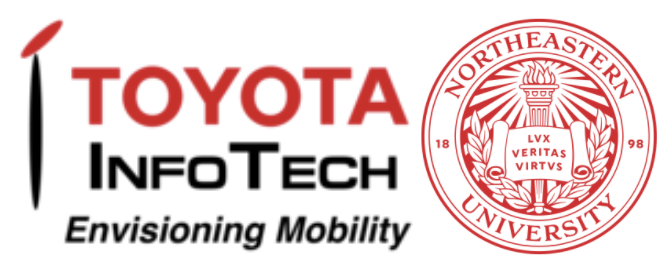

I am a Senior Data Architect at CommonSpirit Health (CSH), interested in data-driven solutions to
everyday problems. Over the last few years, I have focused on rebuilding CSH’s data environment to thrive
in the modern healthcare world. I am experienced in building Cloud Data Warehousing, Data Workflow
Orchestration, Machine Learning, Graph Algorithm, and Natural Language Processing (NLP) solutions to
real-world problems. Additionally, I have achieved recognition for my leadership skills and the ability to
effectively communicate technical principles to a broad audience. I strongly believe that a small group of
motivated individuals can change the world, and I cannot wait to get started!
Here are a few programming languages and technologies I've worked with:
Senior Data Architect, May 2025 - Present...
After two years at CommonSpirit Health,
I was promoted to Senior Data Architect. In this role, I became a key member of the team leading the
technical implementation of Workday’s ERP application. As part of this project, I have been redesigning
CommonSpirit Health’s supply chain data schema and consolidating ten different healthcare supply chain
schemas and databases into that new schema, working closely with subject matter experts. I also began
leading my team’s code reviews and CI/CD development utilizing Azure DevOps. This role has allowed me to
continue to develop my leadership and communication skills and broaden my supply chain expertise across
multiple ERP applications.
Additionally, I kept the responsibilities of my previous role at CSH, as described below,
including building and maintaining the data warehouse, designing and coding ETL data pipelines, and
analyzing complex healthcare datasets.
Data Scientist, June 2023 - May 2025...
In this role, I was primarily focused on building and maintaining CommonSpirit Health’s Data
warehouse, designing and coding ETL data pipelines, analyzing complex healthcare datasets, building bots
to automate manual Lawson ERP tasks, and integrating new technology whenever possible.
I added to and maintained CSH’s data warehouse utilizing big data tools such as DBT, Prefect,
Redshift, GCP, and Azure DevOps, ensuring data quality, integrity, and consistency. I designed, coded, and
maintained Python ETL data pipelines that connect disparate healthcare data sources, such as EHR systems,
ERP systems, and external data feeds, including Premier, Clarium, GHX, etc. I analyzed expansive and complex
healthcare datasets to identify patterns, trends, and anomalies, using statistical techniques to draw
meaningful conclusions from data. I built bots to automate highly manual Lawson ERP tasks. I did all this
while participating in code reviews and CI/CD development utilizing Azure DevOps for Git and AGILE project
management.
My biggest impact in this role was integrating new technologies. I was part of the team that
transitioned CSH’s cloud data warehouse from AWS Redshift to Google Cloud Platform (GCP), updating legacy
code for data models, tables, reports, ETL pipelines, etc., to seamlessly function with the new cloud data
warehouse service. I also pioneered email automation in the supply chain department. Utilizing a relay server
to automate sending emails for multiple projects. Estimated time saved: 100 hours per week for some projects.
My Role...
During this co-op, I worked at the Northeastern University Network and Distributed Systems Security Lab (NDS2)
analyzing the future of Autonomous Vehicles and Autonomous Driving Systems in cities on a grant funded by Toyota InfoTech Labs.
I predominantly worked on my own project finding potential security issues with entire
cities of Connected and Autonomous Vehicles through intelligent graph algorithms. This project culminated in writing
a paper as the first author, Alternative Route-Based Attacks in Metropolitan Traffic Systems, on one specific attack,
which I named the Alternative Route-Based Attack. I published and presented this paper at the
52nd IEEE/IFIP International Conference on Dependable Systems and Networks (DSN) 2022
in the Safety and Security in Intelligent Vehicles (SSIV) category. You can read more about this paper above in the publications section.
The full paper is available HERE and also on IEEEXplore HERE
A short 1 minute teaser presentation is available HERE
The full presentation I made at the conference is available HERE
My Role...
During this co-op, I worked as a Natural Language Processing (NLP) Analyst at Genentech. I was responsible
for their Relationship Extraction and Graph Database Project. I applied the BERT Machine Learning and rule-based NLP algorithms to over
36 million PubMed abstracts to perform Name Entity Recognition and Relation Extraction, extracting biological entities and
relationships between them from text into structured graphical relationships. I also designed and built a graph database on an AWS EC2 instance, using Neo4j, to store over a hundred thousand
biological entities and over ten million entity associations using data extracted from PubMed abstracts and publicly available data.
My Impact...
"Out of the many TAs (Teaching Assistants) that I had the chance to meet throughout the semester, I found Sid to be one of the most effective. Whether it was helping me spot errors in my code or simply helping me grasp the general concepts, he was always willing to take as much time as I needed to understand. When a large group of students had a common problem, he even invited us to the board and used diagrams or drawings to help everyone at once, which I found to be very efficient considering the consistently high ratio of students to TAs in office hours. However, I personally felt that what helped me the most was his use of his past experiences to help me gain confidence and pride in my work. As a student with no prior computer science experience, I felt hopelessly behind, but his ability to relate to my position made it clear that success was anything but impossible."
"Sid saved me in office hours so many times. I felt like I really understood the material after sitting with him and having him explain what was wrong with my code and giving me a place to start. THE BEST."
"Sid was great! He was one of my lab TAs and was really clear when instructing on difficult topics during lab. He also was extremely awesome during office hours by walking me through any confusion/issues that I had. Also, great glasses."
"Sidney is really helpful and good at explaining things, always willing to go over things/repeat what he already said, super nice"
"Sidney was extremely helpful during office hours, helping me work through all of my homework questions in a respectful and approachable manner. Thank you!"
My Role In Boston...
For the last four years, I have supported the Fundamentals of Computer Science 1 course at Northeastern
University in a variety of part-time roles. Initially, I started as a tutor my second semester after taking the course, which entailed supporting Teacher's Assistants
during labs, grading homework, and hosting office hours. As a Sophomore, I was promoted to the role of
Teacher's Assistant where I organized and instructed a weekly lab lecture for up to 101 students (depending on the semester),
mentored computer science tutors, hosted weekly office hours, and graded exams.
My Role In London...
After assisting this course part-time for 7 semesters in Boston I was offered the opportunity to move
to London and teach the course full-time at Northeastern's satellite campus, formerly The New College of Humanities,
for the Fall 2022 semester. I taught 4 sections of the course, hosted office hours, and helped
design course material for the 120 students taking the course. Living and teaching in London was a dream come true
and the experience of a lifetime!
This paper covers the Alternative Route-Based Attack which targets cities made up of Connected and Autonomous Vehicles
through intelligent graph algorithms. I first authored this paper during my co-op at the Northeastern University Network and Distributed Systems Security Lab (NDS2)
on a grant funded by Toyota InfoTech Labs and
was published and presented at the 52nd IEEE/IFIP International Conference on Dependable Systems and Networks (DSN) 2022
in the Safety and Security in Intelligent Vehicles (SSIV) category.
The Abstract...
With the growing reliance on driving direction applications that dynamically account for live traffic updates, drivers
are much more likely to act optimally, by taking the shortest path to their destination, and therefore more predictably.
As city networks transition into being made up of connected and autonomous vehicles, autonomous driving pilots are even
more likely to act optimally and predictably. The predictability that comes from acting optimally allows motivated
attackers to manipulate driver(s) to travel chosen slower alternative routes by causing disruptions on road segments
that are part of faster routes. A motivated attacker could use this method to cause a number of different harms such
as forcing specific vehicles to take unnecessarily long routes, forcing all vehicles traveling between popular
locations to follow a chosen route, or making vehicles travel specific road segments that the attacker chose,
such as toll roads. In this work, we show the feasibility and practicality of conducting such attacks on several
real traffic networks of major North American cities. We analyze several attack objectives under different attacker
constraints and we demonstrated that an attacker could find an attack strategy in a matter of seconds.
The full paper is available HERE and also on IEEEXplore HERE
A short 1 minute teaser presentation is available HERE
The full presentation I made at the conference is available HERE
Implemented Monte Carlo Learning, Q-Learning, and TD3 (Twin Delayed Deep Deterministic
Policy Gradient) algorithms in the OpenAI Bipedal Walker Environment, in which you algorithmically teach a 2-legged robot
to walk/run. While the Monte Carlo Learning and Q-Learning algorithms were largely unsuccessful, the TD3 approach
successfully trained the OpenAI Bipedal Walker to walk/run.
The full project is available HERE
The full paper is available HERE
Global warming is a problem that is worsening daily. It is going to have more and more drastic
effects on humankind unless it is addressed. Our project revolves around demonstrating the effect global warming
is having on the extent of the Arctic and Antarctic sea ice cover, through important climate features.
The extent of the Arctic and Antarctic sea ice cover is determined by the area of the ocean made up of at least 15% sea ice.
In general, the goal of our project is to illustrate the severity of our current and future climate
crisis. We used several important climate features including the average monthly global temperature
from Berkeley Earth, CO2 levels from the Scripps Institute of Oceanography, and the number of natural disasters
that occurred on a specific date from the Center for Research on the Epidemiology of Disasters to
predict the extent of the Arctic and Antarctic sea ice cover.
The full project is available HERE
The full paper is available HERE

The goal of this project was to gather data on weather and determine how much power would be generated
by building and operating a new wind turbine in a specific area from a variety of climate features. For our hypothesis test, we specifically looked at whether the time of
day (early morning, mid-morning, afternoon, or night) affected the amount of power generated. The results of our
statistical tests provided evidence supporting a relationship between the two. We then used predictive supervised
regression models to predict the amount of power generated based on our features. When evaluating our models, we
found that linear regression, Ridge, and Lasso algorithms had the best performance and were the most effective
predictive models.
When my team initially discussed this project, we agreed to focus on a green energy source.
After some initial research, we noticed that wind energy is often either overlooked or criticized as inefficient because
turbines cannot convert wind into electricity at 100% efficiency. Yet the amount of actual electricity a wind
turbine can produce is seldom mentioned. We wanted to focus on the energy produced by wind turbines to dispel
myths surrounding this green energy source. This project aspired to provide evidence supporting building more
wind turbines to lessen our dependence on the harmful energy sources wreaking havoc on our atmosphere.
The full project is available HERE
A presentation is available HERE
Biolink is a database of networked biological knowledge reformatted
into Neo4j, MongoDB, and other database technologies. The goal of Biolink is to create a
multi-model database to support queries on biological knowledge in the domains of genes, proteins, diseases,
clinical trials, pathways, functional annotations (GO), bioassays, and compounds (Pubchem). Biolink can also
serve as a nomenclature translation service.
My team was tasked with expanding Biolink by adding new node types and associations from
the data found on PubChem to Biolink's Neo4j and MongoDB databases. Specifically, we added two new node types (bioassays and compounds) and two new associations
(bioassays to genes and compounds to bioassays). As a final result, after adding compounds and their associated bioassays,
Biolink users can understand the effects of compounds on various diseases. This is due to compounds being tested by
bioassays that interact with genes associated with specific diseases.
The full project is available HERE
I designed this dashboard of visualizations with the Sustainable
Business Network of Massachusetts for the Boston Local Food Festival. The Sustainable
Business Network of Massachusetts is a Boston-based nonprofit organization that promotes local farms with
sustainable practices and organizes the Boston Local Food Festival. The Project was coded using a
combination of JavaScript, D3 (a JavaScript library for creating interactive data visualizations in web browsers), HTML, and CSS.
My team's dashboard promoted awareness among buyers and farmers
regarding the availability of sustainable and local food. Through our dashboard, we fostered these
relationships by filling in the information gap that exists between buyers looking to purchase local food and
farmers looking for more distribution channels. In general, our dashboard connects buyers
to farmers so that larger scale buyers are informed about the availability of local food. We
created a dashboard that identified the location of farms that wholesale
local food along with how much they produce, whether they have a trade relationship with a
buyer and if they are willing to increase production.
The visualization is available HERE
The full project is available HERE
A demo video is available HERE
Steganography, the practice of concealing a file, message, image, or video within another file, message,
image, or video, has been used for millennia. The first documented steganographic technique was
created in 440 B.C. when the Greek ruler, Histaeus, shaved the heads of his slaves and tattooed a message on them, then
waited for hair growth to hide the message. Invisible ink was another popular steganographic technique, which was
used by George Washington and the Culper spy ring during the Civil War. I created a script that uses the
practice of steganography to hide a message, up to 1,000,000 characters long, in any image to allow
users to pass hidden messages to an intended recipient.
The full project is available HERE

A Gaussian blur, also known as Gaussian smoothing, is a technique to blur images that determines
the new color of each pixel based on the average color of nearby pixels weighted towards the closest pixels. This is
accomplished using a Gaussian function. Gaussian blurs have become particularly integral to computer vision and graphic software where they are used to
reduce image noise and detail to focus images and videos on their integral features. Blur filters have also become common in photography
where blur filters are standard in most cameras, and are the base of most other types of filters.
The full project is available HERE
I created a python script that creates a graph of Wikipedia articles that link to each other leveraging the
graph database Neo4j. Provided a starting Wikipedia link, and the number of articles to travel from that link, my
script creates a graph in Neo4j. The resulting graph contains a node for every Wikipedia link within
the certain number of articles of the starting Wikipedia link and a relationship for every Wikipedia page
that links to another Wikipedia page within the graph. This project illuminates the connections
between certain topics or can be used to beat any of your friends at the wiki game.
The full project is available HERE
I created a python script that scrapes all the data (every category for both regular season and playoff)
from Basketball Reference, a website for Basketball statistics, for all current NBA players. I also provided a
separate script to load the data into a SQLite database with a normalized schema.
As a basketball enthusiast who understands the game through a statistical lens, I created this web scraper
for Basketball Reference so that for basketball-related projects
I would be able to easily gather data.
The full project is available HERE
I wrote a script that executes a Slow Loris attack. A Slow Loris is a Denial of Service attack invented by Robert "RSnake" Hansen. It attacks a
website by gaining control of as many sockets as possible and continuing to control those sockets by periodically
sending a small random message to the socket to show the website the socket is still in
use so that no one else can use that socket. Amazingly a Slow Loris attack uses very little bandwidth
and does not affect other ports or services, meaning the local machine can run this attack while still
operating normally.
The full project is available HERE
Taught high school level math to classes of 10 adults so they could pursue a high school equivalency degree (GED).
More information about X-Cel Education is available
HERE
Helped teach middle school student's to write, edit, manage and promote a literary magazine
during an after-school club.
More information about 826 Boston is available
HERE
I designed this dashboard of visualizations with the Sustainable
Business Network of Massachusetts for the Boston Local Food Festival.
For more information about this project please scroll up to the
Personal Projects section or click HERE
Coded and Designed by Sidney La Fontaine
Chicago, IL | Last Updated 2025